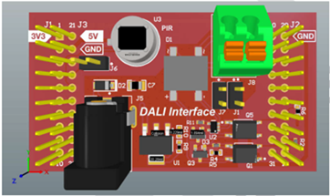
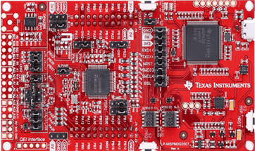

MSPM0 DALI User’s Guide¶
1. Introduction¶
Digitally Addressable Lighting Interface (DALI) is a serial protocol for digital lighting control that allows for simple and efficient communication between various lighting application gear and controllers.
Note: The use of “Master” and “Slave” terminology is being considered obsolete. These terms have been replaced with “Controller” and “Gear” respectively.
2. DALI in the MSPM0 SDK¶
The MSPM0 SDK provides a DALI protocol software layer that enables the MSPM0 to act either as a control gear or as a control device. The implementation is based on selected parts of the IEC62386 standard and is structure to provide essential protocol handling, while leaving flexibility for users to build custom application logic on top.
Control Gear¶
Control gear are devices that receive and act on DALI commands. These devices control lighting loads based on the instructions received over the DALI bus.
Supported DALI Parts¶
DALI IEC 62386-102:2014 - (General Requirements) defines the core behaviors for all DALI control gear, including addressability, command handling, and light output control parameters.
DALI IEC 62386-207:2018 - (LED Modules) extends Part 102 with specific functionality required for controlling LED drivers.
Included Features
Functions to receive and transmit DALI commands and responses, respectively
Template functions using EEPROM to store certain DALI information in Flash memory and reload that information at startup
Fade Time/Fade Rate fade routines
Support for Direct Arc Power Control (DAPC), Up, Down, Step Up, Step Down, Recall Max, and Recall Min Execution Commands
Other execution commands can be implemented utilizing the fade time routine implemented for DAPC
Support for Configuration commands
Extended Fade Time and Identify Device were omitted for customer implementation
Template for setting fast fade time was included, but translation to timer load value implementation was omitted
Only fade time for IEC62386-102:2014 is supported
Extended Fade Time and Fast Fade Time are not supported
Fast fade times can be set, computation for extended fade times will have to be included by customer
Modify timeToPeriodConversion to support use in DAPC
Template for Reset Memory Bank was included in source code
Support for both logarithmic and linear fade curves
IEC 62386-207 supports a linear fade curve if selected
If LED Module is enabled for a connected device, it will allow you to use a configuration command to select a dimming curve
Control Devices¶
Control devices are responsible for initiating communication on the DALI bus. These devices send commands or events based on inputs such as sensor triggers.
Supported DALI Parts¶
DALI IEC 62386-103:2014 - (General Requirements) defines the general behaviors for all DALI control devices, including instance based addressing, event generation and communication format.
DALI IEC 62386-303:2017 - (Occupancy Sensors) extends Part 103 with input behaviors specific to occupancy detection devices, such as movement and presence sensors.
Included Features
Functions to receive and transmit DALI commands and responses, respectively
Template functions using EEPROM to store certain DALI information in Flash memory and reload that information at startup
Support for Multi Master Application Controller (Collision Detection, Collision Avoidance and Collision Recovery)
Support for DALI 103 Commands
Device Control Instructions
Device Configuration Instructions
Device Queries
Instance Control Instructions
Special Commands
Support for DALI 303 Event Messages
Support for configuring the onboard PIR sensor on the TIDA 010-963 boosterpack.
3. Example Applications¶
This section provides example applications based on the supported DALI functionality. Each example demonstrates the use of specific parts and can be used as a reference for developing full-featured applications.
1. LED Demo¶
This example demonstrates DALI control gear implementation using DALI Part 102 and 207. The onboard LED on the launchpad is used to represent the lighting load.
Required Materials
-
-
TIDA 010-963 Boosterpack



Mount the TIDA 010-963 Boosterpack onto MSPM0L1306_LP. Connect the DALI bus lines to Hasseb DALI 2 controller. Once the example is flashed and device is running the example, launch the DALI 2 Controller GUI and press initialize. Once a short address, random address, and device type appear, you can begin sending supported/implemented commands to the device. LED on the launchpad will respond to the supported execution commands.
2. Occupancy Sensor demo¶
This example uses DALI Part 103 and Part 303 to implement an occupancy sensor using the onboard PIR sensor on the TIDA 010-963 board. The device sends event messages based on the detection motion.
Required Materials
-

TIDA 010-963 Boosterpack
External DALI Application controller can be used to send commands and verify event messages of the input device.
The test controller example can be used to evaluate this demo. However, no predefined commands are included in the code, users must manually input valid forward frame data to test the input devices.
Mount the TIDA 010-963 Boosterpack onto MSPM0G3507_LP. Connect the DALI bus lines to the boosterpack mounted on another MSPM0G3507_LP which is running the test controller example. Ensure that one of the TIDA 010-963 board provides power to the bus by supplying a 24V external DC input through the barrel jack connector on the board. Also, make sure the J1 and J7 connectors are properly connected to enable the external supply to power the DALI bus. Details on how to send commands using the test controller example are provided in the following section.
3. Test Controller demo¶
This example uses DALI Part 103 to implement a basic DALI application controller capable of sending forward frames. It allows users to manually construct and transmit 16-bit or 24-bit frames over the DALI bus.
No predefined commands are included in this example. Users are expected to modify or input the desired command frames at runtime. This setup serves as a reference for building a full-featured application controller, where custom control logic and flow can be added based on their requirements.
Once the example is flashed and the device is running, users can add the gUserVar variable to the expressions tab and modify its parameters as needed. Then set toSend to 1 to trigger the command transmission. If a response is received, the gReceive variable is set to 1, and the response data can be viewed in dali_gpio.Rx.dataArr.